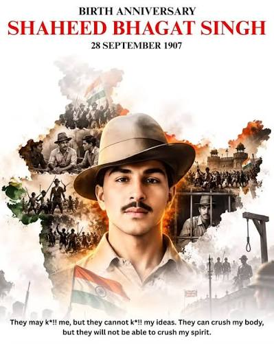

Education
Bhagat Singh studied at National College in Lahore. He read books on history, politics and revolutionary movements. His education helped him develop his ideas about freedom and social justice.

Remembering the immortal revolutionary
Bhagat Singh was born on 28 September 1907 in Banga, Punjab, now in Pakistan. He belonged to a patriotic family connected with India's freedom movement.
From childhood, he loved reading books and learning about great leaders. The Jallianwala Bagh massacre deeply affected him and strengthened his desire to fight for India's independence.
He joined the Hindustan Socialist Republican Association (HSRA) and became one of India's most influential revolutionaries.
On 23 March 1931, Bhagat Singh, Rajguru and Sukhdev were executed in Lahore. Their sacrifice inspired generations of Indians.
28 September 1907
Banga, Punjab
HSRA
23 March 1931
Click on a topic to learn more about Shaheed Bhagat Singh.
His birth, family and childhood
Explore More →Explore Bhagat Singh's educational journey.
⭐His journey as a revolutionary
Explore More → 📖His personal choices and beliefs
Explore More → ✊His fight against colonial rule
Explore More → 🇮🇳His role in India's independence movement
Explore More → 💡His beliefs about equality and justice
Explore More → 🕊️His sacrifice and lasting influence
Explore More →Bhagat Singh studied at National College in Lahore. He read books on history, politics and revolutionary movements. His education helped him develop his ideas about freedom and social justice.
As a young man, Bhagat Singh became actively involved in revolutionary activities. He worked with other freedom fighters and dedicated himself to the struggle against British colonial rule.
Bhagat Singh chose not to marry and instead devoted himself to the freedom movement. His personal decisions reflected his strong commitment to India's independence.
Bhagat Singh helped spread revolutionary ideas among young Indians. In 1929, he and Batukeshwar Dutt protested in the Central Legislative Assembly against repressive colonial laws. His writings and actions became an important part of India's freedom struggle.
Bhagat Singh supported freedom, equality, rational thinking and social justice. He believed that a better society required people to think critically and challenge injustice.
Bhagat Singh, Rajguru and Sukhdev were executed on 23 March 1931. Their courage and sacrifice made them lasting symbols of India's independence movement. Shaheed Diwas is observed in their memory.